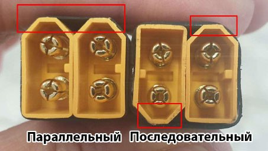
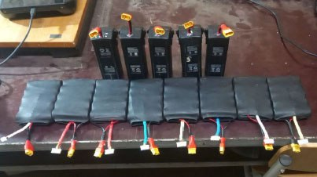

Док-стация для разблокировки и восстановления АКБ от DJI М3 (всей серии).
Прошивка русифицирована
ℹ️ Прибор объединяет в себе
, что позволяет удобно и безопасно организовать процесс работы с АКБ.
Работает без использования компьютера.
К прибору подается питание через USB-порт (можно от компьютера, можно от powerbank), вставляется АКБ и выполняются действия по
* перед использование необходимо прошить контроллер ESP8266 на
с помощью программы
.
📝 Список электронных компонентов:
1. Контроллер Wemos D1 mini PRO на ESP8266 - 1шт.
2. OLED SSD1306 I2C 128x64 - 1шт.
3. Повышающий преобразователь Step-Up DC-DC MT3608 - 1шт.
4. Резистор R100 2W - 1шт.
5. Тактовая кнопка 6х6 мм, 4-контактная - 2шт.
6. Разъем 8pin 2,5 мм Blade, для подключения АКБ - 1шт.
📝 Список 3Д-макетов корпуса:
1. Док-станция для АКБ М3 - основание.
2. Док-станция для АКБ М3 - верхняя крышка.
3. Док-станция для АКБ М3 - адаптер.
4. Док-станция для АКБ М3 - держатель кнопок.
📎
(заряд банки до 1,5В за 1 час).
#техник_бпла
#ремонт
#DJI
#АКБ
Это вложение из поста t.me/platforma_fpv/1455/1474

Сдваиватели для АКБ
Существует 2 типа сдваивателей – параллельный и последовательный.
- Параллельный нужен для увеличения емкости.
- Последовательный нужен для увеличения напряжения (увеличить число S).
При использовании сдваивателей необходимо брать одинаковые АКБ.
📎
#техник_бпла
#АКБ
Это вложение из поста t.me/platforma_fpv/1455/1531

DJI Battery Killer
ℹ️ Программа для разблокировки АКБ DJI. Работает с Windows.
📝
Причины блокировки АКБ
:
- полный разряд;
- неправильное установка;
- перегрев АКБ;
- сбой прошивки или устаревшая прошивка дрона.
📎
.
📝 Инструкция:
"
⚠️ Для подключение АКБ к компьютеру Вам понадобится адаптер CP2112.
#программное_обеспечение
#для_windows
#техник_бпла
#ремонт
#DJI
#АКБ
Это вложение из поста t.me/platforma_fpv/16/1299

Дополнительная АКБ для DJI Mavic 3 (для всей 3 серии)
.
ℹ️ Дополнительная батарея нужна для увеличения времени полета. Насколько увеличится время полета зависит от емкости дополнительной АКБ.
Батарея собирается на базе 5-ти аккумуляторов форм-фактора 21700.
Сборка подобной АКБ обойдется в 2-3 раза дешевле покупки оригинальной АКБ.
Для сборки АКБ необходимо использовать 5-ть одинаковых аккумуляторов (одной емкости).
Для подключения дополнительной батареи необходимо будет модернизировать родную АКБ (вывести внешний разъем).
📎
#техник_бпла
#DJI
#АКБ
Это вложение из поста t.me/platforma_fpv/1455/1538

Сборка дополнительной АКБ для Mavic 3
Сборка дополнительной АКБ для DJI Mavic 3 на базе 5-ти элементов 21700.
⚠️ Для сборки АКБ необходимо использовать 5-ть одинаковых аккумуляторов (одной емкости).
Данная сборка является альтернативой
.
В отличие от нее, в текущей сборке не используется внешний печатный корпус, а элементы закрыты термоусадкой или скотчем.
В сборке использованы:
- Аккумулятор LG 21700 M50LT Li-ion 5000 мАч 3,7 В - 5 шт.;
- Кабель с разъемом JST XH 2,54 мм, 6-pin, 30 см - 1 шт.;
- Провод AWG16;
- Никелевая лента ширина 8 мм, толщина 0,15 мм;
- Разъёмы XT60 мама - 1 шт.;
- Разъёмы XT60 папа - 1 шт.;
- Термоусадка или скотч.
📎
#техник_бпла
#DJI
#АКБ
Это вложение из поста t.me/platforma_fpv/1455/1596

Модернизация аккумуляторов для DJI Mavic 3 (М3Т, М3Е).
⚠️2й аккум надо крепить на тушку дрона.
➡️ Инструкция как доработать аккумы -
.
Спаривание аккумуляторов для возможности одновременной работы на борту.
Увеличивает на «≈ 40 %» время полета коптера.
На модернизацию пары аккумуляторов использовали
Провод AWG 18 гибкий в силиконовой изоляции (черный).
Провод AWG 18 гибкий в силиконовой изоляции (красный).
Разъем XT60 (пара мама-папа).
Термоусадка 3.5 мм.
Термоусадка 9 мм (на соединитель простой).
Инструменты: гравёр, набор для пайки, спирт, пластиковая монтажка.
Важно
Включать первым надо 1й аккум (в тушке дрона).
Только затем - второй. Выключать в обратном порядке (второй - первый).
📎
#техник_бпла
#DJI
#АКБ
Это вложение из поста t.me/platforma_fpv/1455/1610

Кейс для АКБ (М3 всей серии).
Удобен для хранения и
переноски в рюкзаке
аккумуляторной батареи для DJI М3 (всей 3й серии).
Кейс будет особенно актуален
в дождь.
Еще будет полезно:
при поддержке
#3Д_для_периферийных_устройств
#АКБ
#DJI
#техник_бпла
Это вложение из поста t.me/platforma_fpv/250/1691
#АКБ
- программа для разблокировки АКБ DJI.
📝
- вариант 1
📝
- вариант 2
📝
Веб-страница создана автоматически на основе поста пользователя ПЛАТФОРМА_FPV